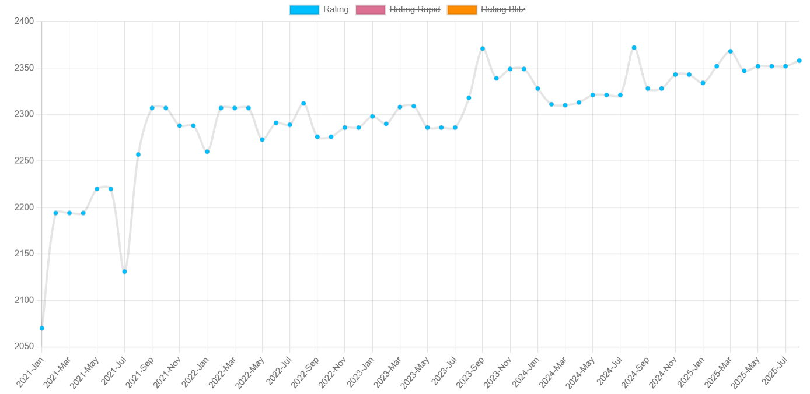

Acerca de mí
Soy un joven Maestro FIDE Valenciano con un Elo entorno a los 2360 y 2 normas de IM. Empecé a competir desde muy pequeño y siempre he estado en el top nacional de mi categoría. Actualmente sigo compitiendo y desde el año 2024 he empezado entrenar a alumnos.
Llevo en el programa de Tecnificación de la FACV (Federación Valenciana de Ajedrez) más de 6 años y estuve durante 2 en el de la Federación Española.
Estadísticas Generales
| Año | Partidas Lentas | Partidas Rápidas | Partidas Blitz | Elo Máximo |
|---|---|---|---|---|
| 2025 | 47 | 3 | 8 | 2368 |
| 2024 | 68 | 44 | 47 | 2372 |
| 2023 | 114 | 27 | 35 | 2371 |
| 2022 | 95 | 25 | 25 | 2312 |
| 2021 | 96 | 32 | 31 | 2307 |
| 2020 | 45 | 0 | 45 | 2155 |
| 2019 | 67 | 18 | 14 | 2140 |
| 2018 | 87 | 9 | 9 | 2140 |
| 2017 | 75 | 9 | 0 | 2094 |
| 2016 | 66 | 8 | 7 | 1819 |
| 2015 | 49 | 7 | 0 | 1583 |
| 2014 | 27 | 0 | 0 | 1568 |
| TOTAL | 836 | 182 | 221 | 2372 |
Resultados Destacados
| Torneo | Fecha inicio | Fecha final | Ritmo | Clasificación | Performance |
|---|---|---|---|---|---|
| Mundial sub14 | 11-09-2019 | 12-09-2019 | 15m+5s | 4º | 1839 |
| Iberoamericano sub18 | 10-08-2019 | 18-08-2019 | 90min+30s+30m | 4º | 2176 |
| Open Internacional Roquetas | 03-01-2021 | 06-01-2021 | 90min+30s | 3º | 2303 |
| Open Internacional Gran Hotel Bali | 03-12-2022 | 10-12-2022 | 90min+30s | 3º | 2341 |
| Open Internacional Quart de Poblet | 22-07-2024 | 28-07-2024 | 90min+30s | 1º | 2422 |
| Europeo de Clubes | 20-10-2024 | 26-10-2024 | 90min+30s+30m | 16º | 2412 |
| Europeo de Clubes | 01-10-2023 | 07-10-2023 | 90min+30s+30m | 37º | 2389 |
| Open Internacional Sueca | 22-07-2019 | 28-07-2019 | 90min+30s | 3º | 2277 |
| II Cerrado Promoción FNA | 02-01-2022 | 09-01-2022 | 90min+30s | 2º | 2465 |
| Cerrado Sant Joan d'Alacant | 30-06-2025 | 04-07-2025 | 90min+30s | 3º | 2455 |
| Interclubs C. Valenciana | 11-01-2025 | 29-03-2025 | 90min+30s | 3º | 2419 |
| Final Interclubs C. Valenciana | 04-02-2023 | 01-04-2023 | 90min+30s | 4º | 2430 |
| Interclubs Norte C. Valenciana | 14-01-2023 | 25-02-2023 | 90min+30s | 1º | 2496 |
| C.E Rápidas sub18 | 06-08-2022 | 07-08-2022 | 10min+5s | 3º | 1951 |
| C.E Rápidas sub10 | 04-07-2015 | 05-07-2015 | 10min+5s | 5º | 1453 |
| C.E Rápidas Sub12 | 15-07-2017 | 16-07-2017 | 10min+5s | 4º | 1588 |
| Copa España Clubes sub12 | 02-12-2017 | 06-12-2017 | 90min+30s | 1º | 2094 |
| Selecciones Autonómicas sub14 | 26-06-2018 | 30-06-2018 | 90min+30s | 1º | 2012 |
| Copa España Clubes sub18 | 05-12-2018 | 09-12-2018 | 90min+30s | 1º | 2102 |
| C.E Rápidas sub14 | 13-07-2019 | 14-07-2019 | 10min+5s | 1º | 1918 |
| Selecciones Autonómicas sub14 | 22-06-2019 | 25-06-2019 | 90min+30s | 4º | 1970 |
| C.E sub16 | 19-07-2021 | 24-07-2021 | 90min+30s | 4º | 2220 |
| C.E Rápidas sub16 | 24-07-2021 | 25-07-2021 | 10min+5s | 6º | 1865 |
| Selecciones Autonómicas sub16 | 17-06-2021 | 20-06-2021 | 90min+30s | 3º | 2220 |
| C.E Equipos Relámpago | 25-08-2024 | 25-08-2024 | 10min+5s | 4º | 2248 |
| CECLUBS 2ª | 11-08-2024 | 16-08-2024 | 90min+30s | 3º | 2372 |
| C.E Universitario Rápidas | 08-04-2025 | 08-04-2025 | 10min+5s | 6º | 2344 |
Campeonatos a Lentas Jugados desde 2017
Campeonatos Internacionales
World Rapid U14 Championship 2019 VII Iberoamericano XXXII Open Internacional Roquetas 2021 XIX Open Internacional Gran Hotel Bali 2022 Open Internacional Crazalema 2022 V Open Internacional Quart de Poblet 2024 38th Europeo de Clubes 2024 39th Europeo de Clubes 2023 V Open Internacional Ciudad de Sueca 2019 IV Magistral Sant Joan d'Alacant VI Open Internacional Valencia Cuna 41º Open Internacional Andorra XXI Open Internacional Gran Hotel Bali VI Magistral Muxtamel V Open Internacional Valencia Cuna XXXV Roquetas Chess Open XX Open Internacional Gran Hotel Bali XVI Open Internacional Poble de Montserrat I Open Esphauses Guardamar del Segura V Magistral Mutxamel VII Open Internacional Semana Santa III Open Internacional de ajedrez Dama Negra XXXIV Open Internacional Roquetas II Maxistral O teu Xacobeo III Open Internacional Valencia Cuna VIII Open Internacional Ciudad de Oviedo VI Open Internacional Semana Santa VIII Sunway Sitges Internacional Chess Festival II Cerrado Promoción FNA 47º Open Internacional La Roda Open Internacional La Nucía Torneo Magistral Norma IM V Open Semana Santa Alicante VII Sunway Sitges International chess festival XXXI Open Internacional Roquetas VI IRT Ciudad de Silla IV Open Semana Santa Alicante VI Open Internacional Quart de Poblet IV Open Internacional Ciudad de Sueca LII Open Villa de Mislata VII IRT Valencia origen dels escacs 45º Open Internacional La Roda XI Festival Internacional Ciudad de Manises V Open Internacional Quart de Poblet